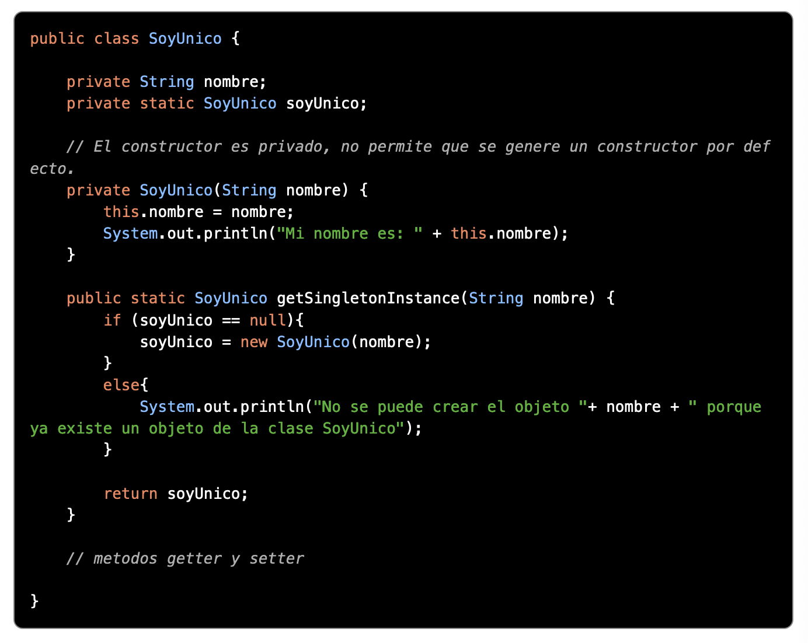
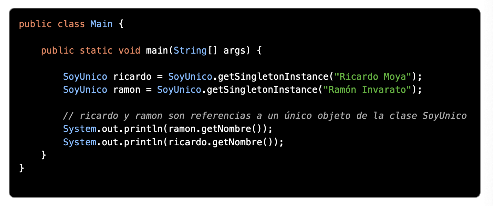
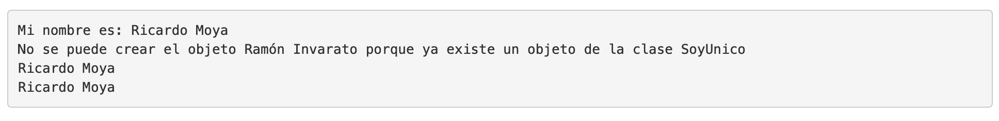
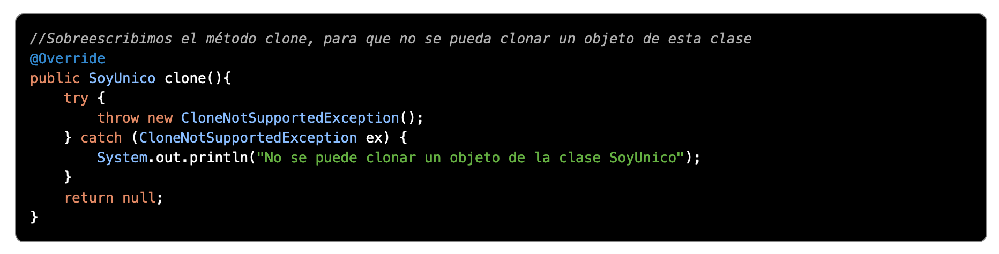
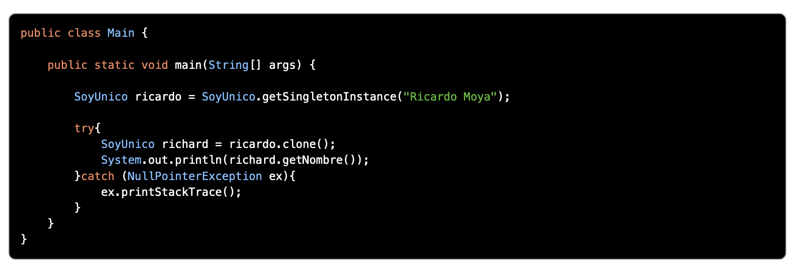
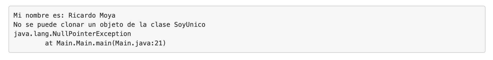

Singleton
Ámbito de uso
El objetivo de este patrón es el de garantizar que una clase solo tenga una instancia (o ejemplar) y proporcionar un punto de acceso global a ella.
Utilidad
Es un patrón empleado habitualmente para las conexiones a bases de datos. Otros usos incluyen: logging, caches, thread pools, configuration settings, device driver objects.
Cómo funciona
Este patrón se implementa haciendo privado el constructor de la clase y creando (en la propia clase) un método que crea una instancia del objeto si este no existe. Además, para mejorar su implementación se suele sobreescribir el método clone() para que no permita ser clonado.
Ejemplo
En el siguiente ejemplo se aprecia como la clase SoyUnico dispone de un constructor privado al que solo se podrá acceder mediante un método, en este caso getSingletonInstance() que será el encargado de crear una instancia de esta clase en caso de no haberse creado previamente.
  Por último sobreescribimos el método clone:
  